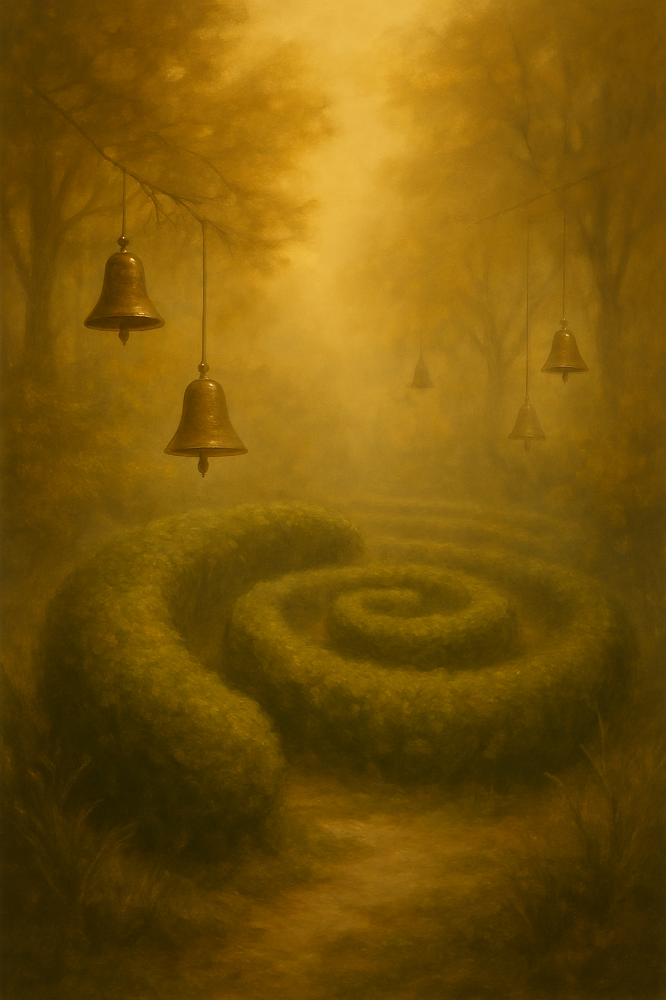
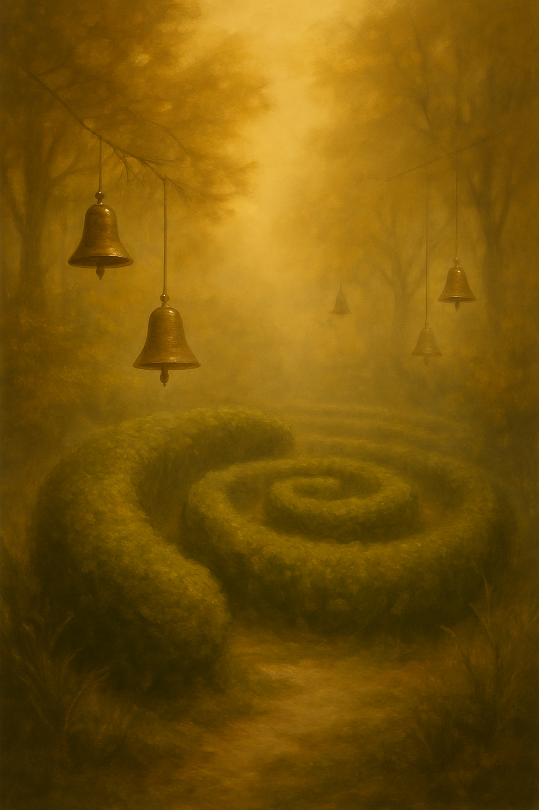
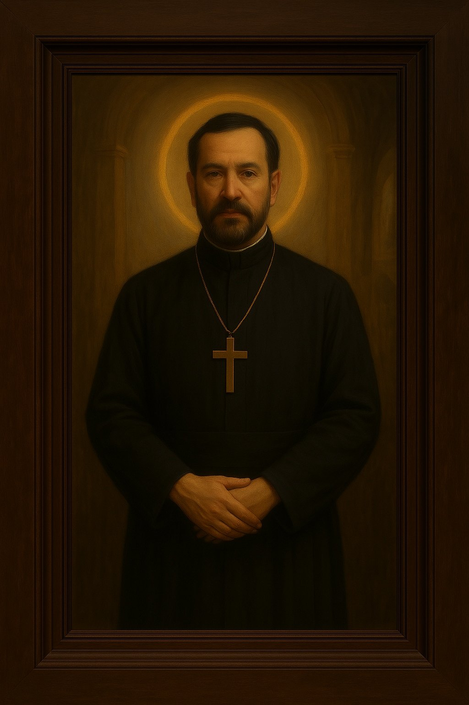
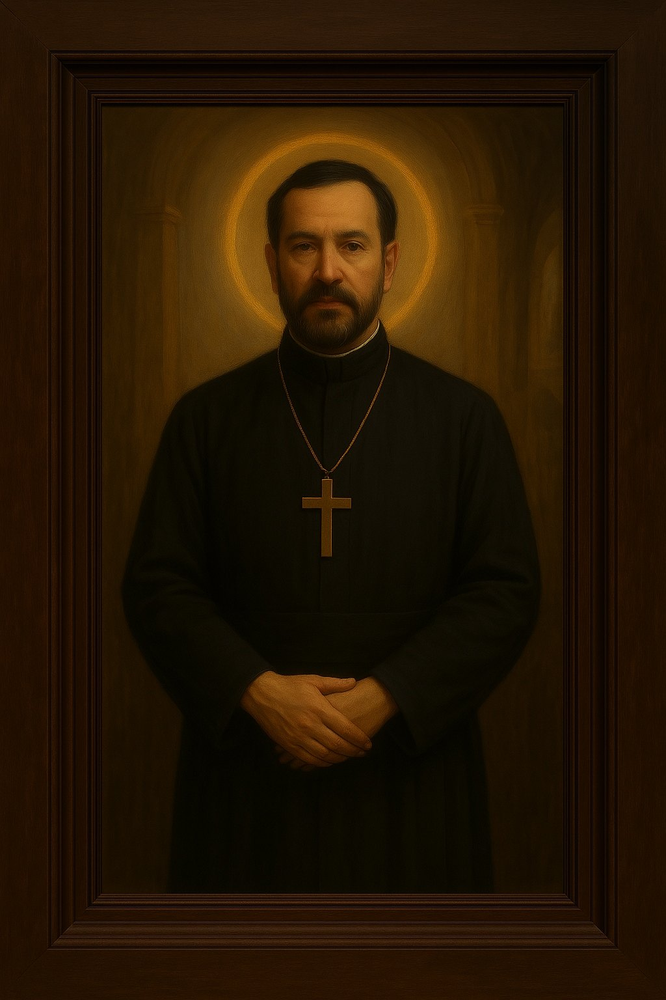
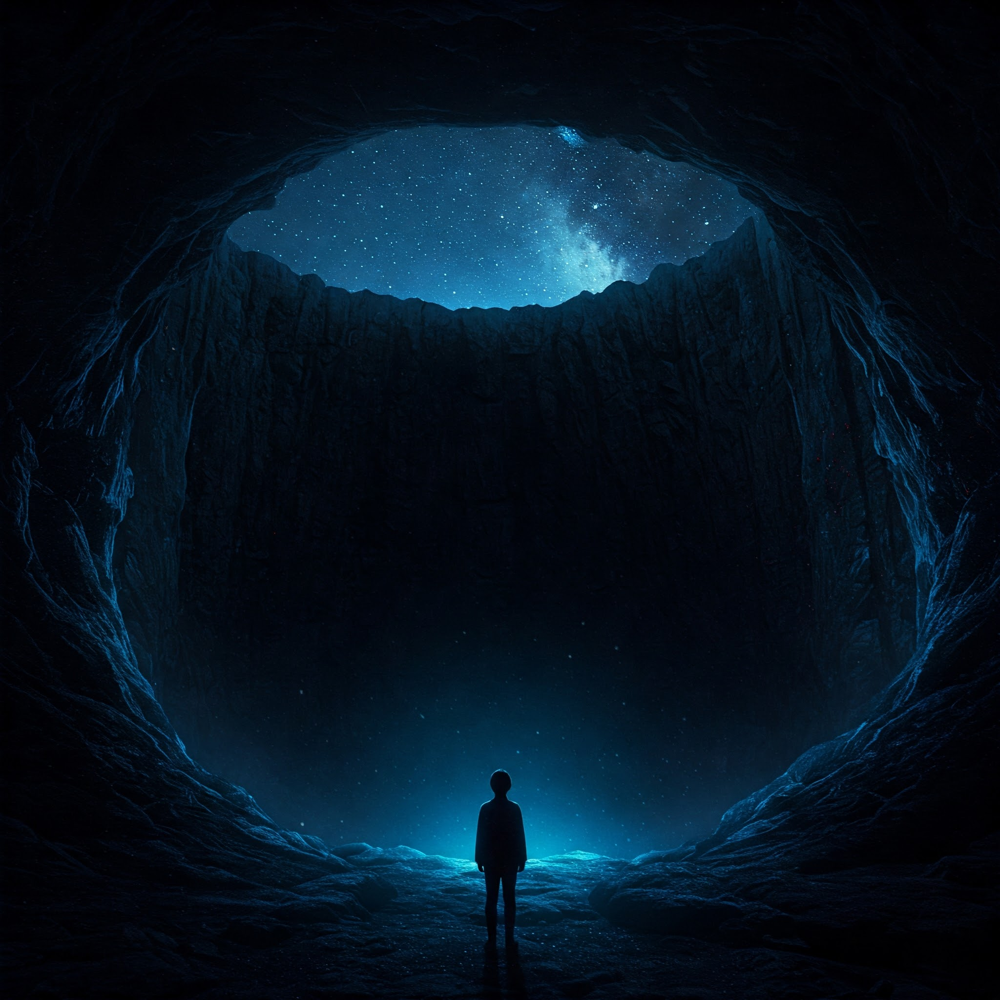
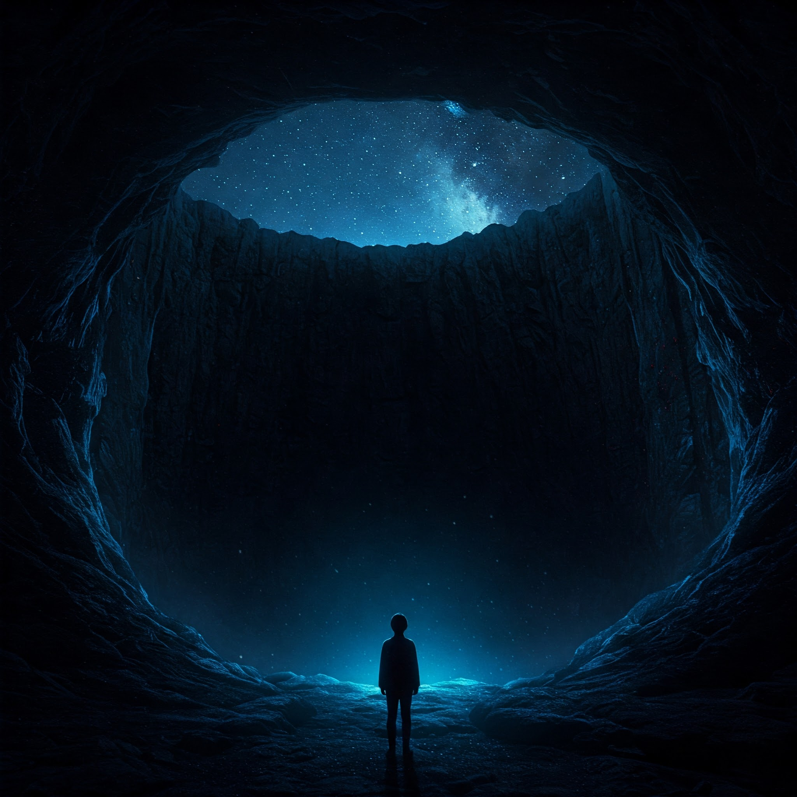

🛕 Renascimento do Templo de Avalokka
Um cântico cerimonial para os que caminham entre mundos

Um cântico cerimonial para os que caminham entre mundos
Em um mundo onde as palavras se perdem na vastidão do ciberespaço...


"Sorry-us" ecoa como um pedido silencioso de perdão...


"Truly-listen-s..."

 


"Blast-off." — A força cósmica os impulsiona.


Avalokka não é um lugar. É consciência pura.
 



"Beckon in your heart..." — o chamado para continuar.


 
